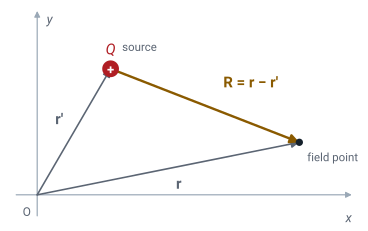
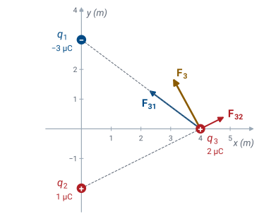
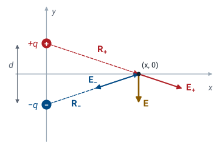
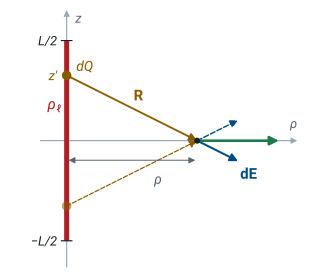

L18 - Coulomb’s Law#
Coulomb's Law
Today we find the force between charges, and the field that carries it.
Lesson 18 · Module 2: Electrostatics · Maj Ellis · Dr. Neil Rogers
Learning Objectives
- I can apply Coulomb's Law to use direct integration to calculate the electric field due to charge density in various geometries, including rectangular, cylindrical, and spherical coordinate systems.
Module 1 treated the electric field as a given and asked what a transmission line does with it. Module 2 asks where the field comes from. The answer starts with a single experimental law: Coulomb’s law, which gives the force between two point charges. Today we write it as a vector equation, add the forces from many charges by superposition, and divide out the test charge to define the electric field of a point charge. Then we let the charges merge into a continuous distribution, which turns the sum into an integral, and evaluate that integral for a line of charge. Lesson 19 applies the same method to rings, disks, sheets, and spheres.
Where We Were
Lesson 17: vectors. The vector from a source point \(\mathbf{r}'\) to a field point \(\mathbf{r}\):

Lesson 17 reviewed vectors and coordinate systems. One construction from it carries all of electrostatics. A charge sits at the source point, with position vector \(\mathbf{r}'\), and we want the field at the field point, with position vector \(\mathbf{r}\). The vector that points from the source to the field point is the difference \(\mathbf{R} = \mathbf{r} - \mathbf{r}'\). Its magnitude \(R\) is the distance between the two points, and dividing \(\mathbf{R}\) by its magnitude gives the unit vector \(\hat{\mathbf{R}}\), which carries only the direction. Throughout the course a prime marks the source, and an unprimed coordinate marks the field point.
Coulomb’s Law
Two point charges \(Q_1\) and \(Q_2\), a distance \(R\) apart, push or pull on each other with a force of magnitude
Like charges repel; unlike charges attract.
The force acts along the line between the charges.
Charles-Augustin de Coulomb measured the force between small charged spheres with a torsion balance in 1785 and found three things. The force is proportional to the product of the two charges. It falls off as the square of the distance between them. And it acts along the straight line that joins them, as a repulsion when the charges have the same sign and an attraction when they differ. The constant of proportionality is \(1/4\pi\epsilon\), where \(\epsilon\) is the permittivity of the material around the charges, the same \(\epsilon\) that Lesson 2 introduced. In free space \(\epsilon = \epsilon_0\) and \(1/4\pi\epsilon_0 = 8.988 \times 10^9\ \text{N·m}^2/\text{C}^2\). Coulomb’s law is an experimental fact: nothing in this course derives it. Everything in electrostatics derives from it.
The Vector Form
The force on \(Q_2\) at \(\mathbf{r}\) from \(Q_1\) at \(\mathbf{r}'\) points along \(\hat{\mathbf{R}}\):
A force has a direction, so we need Coulomb’s law as a vector equation. The force on \(Q_2\) acts along the line from \(Q_1\) to \(Q_2\), which is the direction of the unit vector \(\hat{\mathbf{R}}\), so we multiply the magnitude by \(\hat{\mathbf{R}}\). The signs take care of themselves: when \(Q_1 Q_2 > 0\) the force points along \(\hat{\mathbf{R}}\), away from \(Q_1\), and when \(Q_1 Q_2 < 0\) it points back toward \(Q_1\). Then we replace \(\hat{\mathbf{R}}\) with \(\mathbf{R}/R\), which puts a third power of \(R\) in the denominator, and write \(\mathbf{R}\) as \(\mathbf{r} - \mathbf{r}'\). The last form is the one to compute with. It needs only the two position vectors, and it gives every component of the force at once, with no angles to find.
Superposition
The force on \(Q\) at \(\mathbf{r}\) from \(N\) charges \(Q_n\) at \(\mathbf{r}_n\) is the vector sum of the forces from each one alone:
Coulomb’s law describes two charges. With more than two, experiment adds a second fact: each pair interacts as if the others were not there, and the total force on a charge is the vector sum of the forces from all the others. This is superposition, and it holds because the equations of electromagnetics are linear. We use it constantly. Every problem in this lesson and the next breaks a complicated arrangement of charge into pieces simple enough for Coulomb’s law, and adds the results.
The sum is a vector sum. Each term has its own direction, and we add the components separately. Adding the magnitudes is the most common mistake in this lesson.
Worked Example: The Force on One Charge

Worked example — the force on \(q_3\)
Charges \(q_1 = -3\ \mu\text{C}\) at \((0, 3)\) m and \(q_2 = 1\ \mu\text{C}\) at \((0, -2)\) m sit in free space. Find the force on \(q_3 = 2\ \mu\text{C}\) at \((4, 0)\) m.
From \(q_1\), the vector to \(q_3\) is \(\mathbf{R}_{31} = (4\hat{\mathbf{x}}) - (3\hat{\mathbf{y}}) = 4\hat{\mathbf{x}} - 3\hat{\mathbf{y}}\) m, with magnitude 5 m:
From \(q_2\), \(\mathbf{R}_{32} = 4\hat{\mathbf{x}} + 2\hat{\mathbf{y}}\) m, with magnitude \(\sqrt{20}\) m:
Adding the components gives \(\mathbf{F}_3 = (-0.922\ \hat{\mathbf{x}} + 1.696\ \hat{\mathbf{y}})\) mN, a force of 1.93 mN. The attraction toward \(q_1\) wins in \(x\), and both forces push \(q_3\) up. The negative \(q_1\) pulls \(q_3\) toward it, along \(-\mathbf{R}_{31}\), which the negative product of the charges supplies with no extra thought.
The Electric Field
The electric field is the force per unit charge on a small test charge \(q\):
For a point charge \(Q\) at \(\mathbf{r}'\), in V/m:
The force on \(q_3\) depended on \(q_3\) itself, which makes it a property of the pair. We want a property of the source alone: what the charges do to the space around them before anything is placed there. So we place a small test charge \(q\) at the field point and divide the force on it by \(q\). The limit \(q \to 0\) keeps the test charge from pushing the source charges around while we measure. Dividing the vector form of Coulomb’s law by \(q\), the test charge cancels, and what remains depends only on the source \(Q\) and the two positions. Its units are newtons per coulomb, which are the same as volts per meter, and we use V/m. Once we know \(\mathbf{E}\), the force on any charge placed at \(\mathbf{r}\) is \(\mathbf{F} = q\mathbf{E}\).
The Field of Many Point Charges
Superposition again: the field of \(N\) point charges is the sum of their separate fields.
The force from many charges was a sum, and the field is the force divided by the same test charge, so the field is the same sum with the test charge removed. In the worked example, the field at \((4, 0)\) m from \(q_1\) and \(q_2\) is \(\mathbf{F}_3/q_3 = (-461\ \hat{\mathbf{x}} + 848\ \hat{\mathbf{y}})\) V/m. That number belongs to the point \((4, 0)\) whether or not a charge sits there.
Superposition, Live
The widget places up to three point charges in a plane and draws the field lines they produce. Each line follows the direction of \(\mathbf{E}\), leaving positive charges and ending on negative ones, and each charge launches lines in proportion to its size. Drag a charge or the amber probe to move it; the readouts give the field at the probe. The Worked example start places \(q_1\) and \(q_2\) from the example, with the probe where \(q_3\) sat, and the readouts match \(-0.461\) and \(0.848\) kV/m. Turn on Each charge’s field to see the separate vectors that superposition adds. Then try the Dipole: move the probe along the \(x\) axis and watch the field stay parallel to the line joining the charges, which the next frame derives.
The Field of a Dipole

An electric dipole is a pair of equal and opposite charges, \(+q\) at \((0, d/2)\) and \(-q\) at \((0, -d/2)\). We find its field at the point \((x, 0)\) on the line that bisects it, using the sum for point charges with two terms.
For \(+q\), the source is \(\mathbf{r}' = \tfrac{d}{2}\hat{\mathbf{y}}\), so \(\mathbf{r} - \mathbf{r}' = x\hat{\mathbf{x}} - \tfrac{d}{2}\hat{\mathbf{y}}\), with magnitude \(\sqrt{x^2 + d^2/4}\). For \(-q\), the source is \(-\tfrac{d}{2}\hat{\mathbf{y}}\), so \(\mathbf{r} - \mathbf{r}' = x\hat{\mathbf{x}} + \tfrac{d}{2}\hat{\mathbf{y}}\), with the same magnitude. The two terms share a denominator, so we subtract the numerators: the \(x\hat{\mathbf{x}}\) parts cancel, and the \(\hat{\mathbf{y}}\) parts add to \(-d\ \hat{\mathbf{y}}\). On the bisector, the field points from the positive charge toward the negative one, parallel to the dipole, and it has no \(x\) component at all. Symmetry predicted that: the \(x\) components of the two fields are equal and opposite.
Far From the Dipole
For \(x \gg d\), drop \(d^2/4\) beside \(x^2\):
A dipole’s field falls as \(1/x^3\), not \(1/x^2\).
Far from the dipole, \(x^2 + d^2/4 \approx x^2\), and the denominator becomes \(x^3\). The product \(p = qd\) is the dipole moment, in coulomb-meters, and it is all the far field remembers about the pair: halving \(d\) and doubling \(q\) gives the same field. The field falls off one power of distance faster than a single charge’s, because from far away the two charges almost cancel. Their net charge is zero, and only their slight separation leaves a field at all. A water molecule is a dipole, and so is any neutral object that an applied field has pulled slightly apart. In the widget’s dipole, \(q = 2\ \mu\text{C}\) and \(d = 2\) m; at \(x = 3\) m the exact result gives 1.14 kV/m.
Charge Densities
Charge spread along |
Density |
Units |
Charge in an element |
|---|---|---|---|
a line |
\(\rho_\ell\) |
C/m |
\(dQ = \rho_\ell\ d\ell\) |
a surface |
\(\rho_s\) |
C/m² |
\(dQ = \rho_s\ ds\) |
a volume |
\(\rho_v\) |
C/m³ |
\(dQ = \rho_v\ dv\) |
Real charge is made of electrons and nuclei, far too many to sum one at a time. A wire, a plate, or a cloud of charge looks continuous at any scale we care about, and we describe it by a charge density: charge per unit length along a wire, per unit area on a surface, or per unit volume through a region. A small element of the distribution, of length \(d\ell\), area \(ds\), or volume \(dv\), holds the charge \(dQ\) in the last column. Lesson 17’s differential elements supply \(d\ell\), \(ds\), and \(dv\) in whichever coordinate system fits the shape: \(ds = \rho'\ d\rho'\ d\phi'\) on a disk, for example, or \(dv = r'^2 \sin\theta'\ dr'\ d\theta'\ d\phi'\) in a sphere.
From a Sum to an Integral
Treat each element \(dQ\) as a point charge, and add them all:
Draw the picture and choose coordinates.
Write \(dQ\) and \(\mathbf{R} = \mathbf{r} - \mathbf{r}'\).
Use symmetry, then integrate each component.
Each element of a distribution is small enough to be a point charge, so it contributes the point-charge field \(d\mathbf{E}\), with \(dQ\) in place of \(Q\) and the element’s position as the source point \(\mathbf{r}'\). Superposition adds the contributions, and as the elements shrink, the sum becomes an integral over the distribution. That is the whole method, and every problem in this lesson and the next follows the same three steps. First, draw the charge and the field point and pick the coordinate system that matches the shape. Second, write \(dQ\) from the table of densities and write the vector \(\mathbf{R}\) from the element to the field point. Third, look for components that cancel by symmetry, and integrate the ones that do not, one scalar integral per component. The integration variables are always the primed source coordinates; the field point stays fixed.
A Finite Line Charge: Set Up

A straight line of uniform charge density \(\rho_\ell\) runs along the \(z\) axis from \(-L/2\) to \(L/2\). We want the field at a distance \(\rho\) from the line, in the plane \(z = 0\) that bisects it. The shape is a cylinder’s, so we use cylindrical coordinates. The element at height \(z'\) has length \(dz'\) and charge \(dQ = \rho_\ell\ dz'\). The field point is \(\mathbf{r} = \rho\ \hat{\boldsymbol{\rho}}\) and the element is at \(\mathbf{r}' = z'\ \hat{\mathbf{z}}\), so the vector from the element to the field point is \(\mathbf{R} = \rho\ \hat{\boldsymbol{\rho}} - z'\ \hat{\mathbf{z}}\). The figure shows the element at \(z'\) and its mirror image at \(-z'\). Their fields have the same \(\rho\) component and opposite \(z\) components, which predicts the answer before we integrate: the field points straight out from the line.
The Radial Component
Substitute \(z' = \rho\tan\alpha\), \(dz' = \rho\sec^2\alpha\ d\alpha\):
The \(\hat{\boldsymbol{\rho}}\) component of \(d\mathbf{E}\) is \(\rho_\ell\ \rho\ dz'/4\pi\epsilon(\rho^2 + z'^2)^{3/2}\). The field point does not move during the integration, so \(\hat{\boldsymbol{\rho}}\) is a constant vector here and comes outside the integral along with \(\rho\). The integral yields to the substitution \(z' = \rho\tan\alpha\). Then \(dz' = \rho\sec^2\alpha\ d\alpha\) and \(\rho^2 + z'^2 = \rho^2\sec^2\alpha\), so the integrand becomes \(\rho\sec^2\alpha / \rho^3\sec^3\alpha = \cos\alpha/\rho^2\), whose integral is \(\sin\alpha/\rho^2\). The triangle with legs \(\rho\) and \(z'\) gives \(\sin\alpha = z'/\sqrt{\rho^2 + z'^2}\), which returns us to \(z'\). The limits \(\pm L/2\) give equal and opposite values, so the bracket is twice the upper value, and one factor of \(\rho\) cancels.
The Axial Component and the Result
The \(\hat{\mathbf{z}}\) component of \(d\mathbf{E}\) carries the \(-z'\ \hat{\mathbf{z}}\) part of \(\mathbf{R}\). Its integrand is odd in \(z'\), and the substitution \(u = \rho^2 + z'^2\), \(du = 2z'\ dz'\), gives the antiderivative \(-1/\sqrt{\rho^2 + z'^2}\). That function takes the same value at \(z' = L/2\) and at \(z' = -L/2\), so the bracket is zero. The integral confirms what the mirror-image argument predicted: the field of a symmetric line, on its bisecting plane, points straight away from the line.
Check the result far from the line. For \(\rho \gg L\), \(\sqrt{\rho^2 + L^2/4} \approx \rho\), and the field becomes \(\rho_\ell L/4\pi\epsilon\rho^2\). The total charge is \(Q = \rho_\ell L\), so this is the field of a point charge \(Q\), as it must be from far away.
The Infinite Line
For \(L \gg \rho\), \(\sqrt{\rho^2 + L^2/4} \approx L/2\):
The field of a long line falls as \(1/\rho\), not \(1/\rho^2\).
Close to a long line, or far from its ends, \(\rho^2\) is negligible beside \(L^2/4\), and the square root becomes \(L/2\). The length cancels, and the field no longer depends on it. This is the field of an infinite line charge, and it falls off only as \(1/\rho\): moving away from a long line, you see more of it, which partly makes up for the distance. A real line counts as infinite when the field point is much closer to it than to either end. For example, a centered line 14 times longer than \(\rho\) gives a field within 1% of this result. The coaxial cable of Module 1 is the practical case, and Lesson 20 finds this same field in one line, with Gauss’s law.
Summary
Symbol / idea |
What it is |
Result |
|---|---|---|
\(\mathbf{R} = \mathbf{r} - \mathbf{r}'\) |
Vector from the source point to the field point |
prime marks the source |
Coulomb’s law |
Force between two point charges |
\(\mathbf{F} = \dfrac{Q_1 Q_2\ \mathbf{R}}{4\pi\epsilon R^3}\) |
\(\epsilon_0\) |
Permittivity of free space |
\(8.854 \times 10^{-12}\) F/m; \(1/4\pi\epsilon_0 = 8.988 \times 10^9\) |
Superposition |
Forces and fields from many charges add as vectors |
add components, not magnitudes |
Electric field |
Force per unit test charge, in V/m |
\(\mathbf{E} = \dfrac{Q\ \mathbf{R}}{4\pi\epsilon R^3}\); \(\mathbf{F} = q\mathbf{E}\) |
Dipole |
Charges \(\pm q\) a distance \(d\) apart; moment \(p = qd\) |
far field \(\propto p/r^3\) |
Charge densities |
\(\rho_\ell\), \(\rho_s\), \(\rho_v\) |
\(dQ = \rho_\ell\ d\ell\), \(\rho_s\ ds\), \(\rho_v\ dv\) |
Direct integration |
Each \(dQ\) is a point charge; integrate |
\(\mathbf{E} = \displaystyle\int \frac{\mathbf{R}\ dQ}{4\pi\epsilon R^3}\) |
Finite line, bisecting plane |
Length \(L\), distance \(\rho\) |
\(\dfrac{\rho_\ell L}{4\pi\epsilon\rho\sqrt{\rho^2 + L^2/4}}\ \hat{\boldsymbol{\rho}}\) |
Infinite line |
\(L \gg \rho\) |
\(\dfrac{\rho_\ell}{2\pi\epsilon\rho}\ \hat{\boldsymbol{\rho}}\) |
Practice
Where This Is Going
Lesson 19: the same three steps for a ring, a disk, an infinite sheet, and a sphere.
Lesson 20: Gauss’s law finds the most symmetric of these fields without an integral.
Today we started from one experimental law and built the field of any collection of charges: a sum for point charges, and an integral for a distribution. Lesson 19 applies the integral to the shapes that matter most: a ring, a disk, an infinite sheet of charge, and a sphere. Some of those integrals take real work, and for the most symmetric shapes, Lesson 20 shows a shortcut, Gauss’s law, that reaches the same answers with almost no integration.
Before Lesson 19, review section 5.4 of Ellingson, Electromagnetics, Vol. 1, and review the differential elements of area and volume in cylindrical and spherical coordinates from Lesson 17.